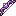
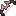

aruori6
整合包图鉴
简单
精确
#c:tools/bow
物品标签 · 6 个已收录成员
标签成员
(6)

星陨长弓
eternal_starlight:starfall_longbow
流璃弓
eternal_starlight:flowglaze_bow
闪烁弓
eternal_starlight:glistering_bow
月珥之弓
eternal_starlight:moonring_bow

血丝弓
eternal_starlight:bow_of_blood
星光弓
tide:starlight_bow
使用该标签的配方
无